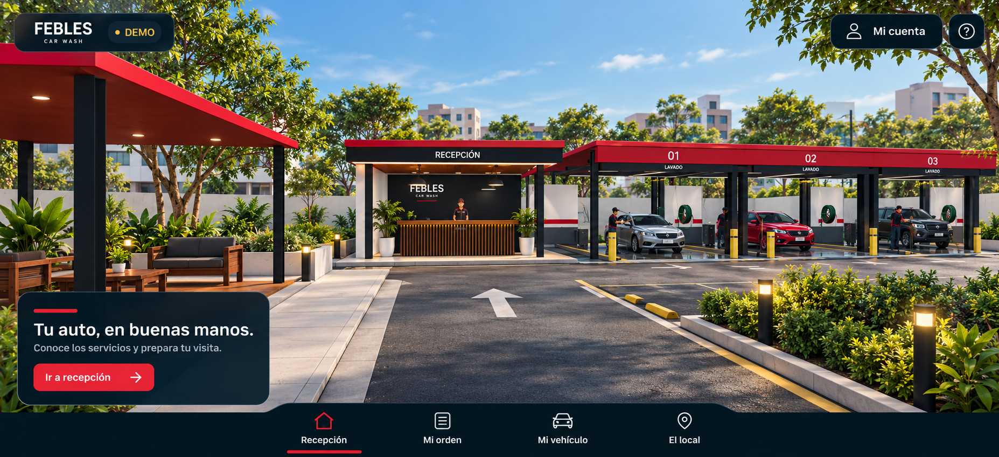
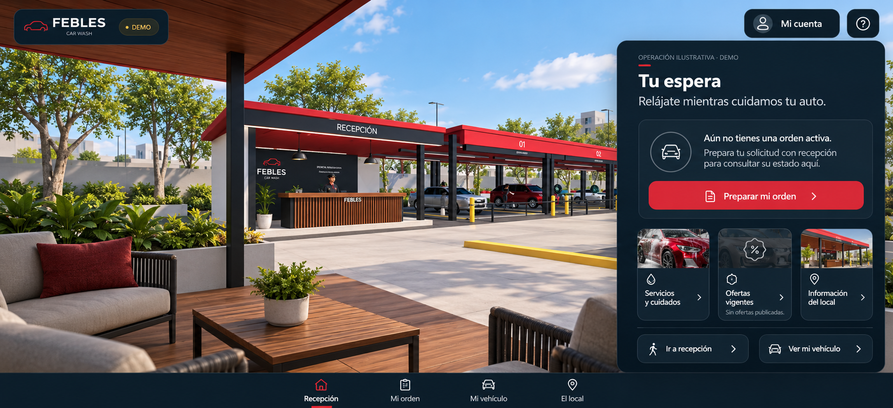
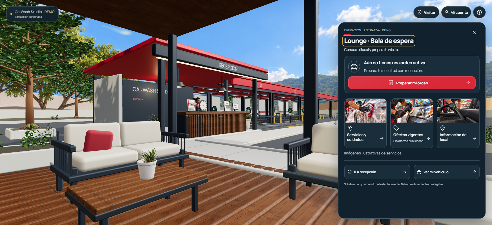
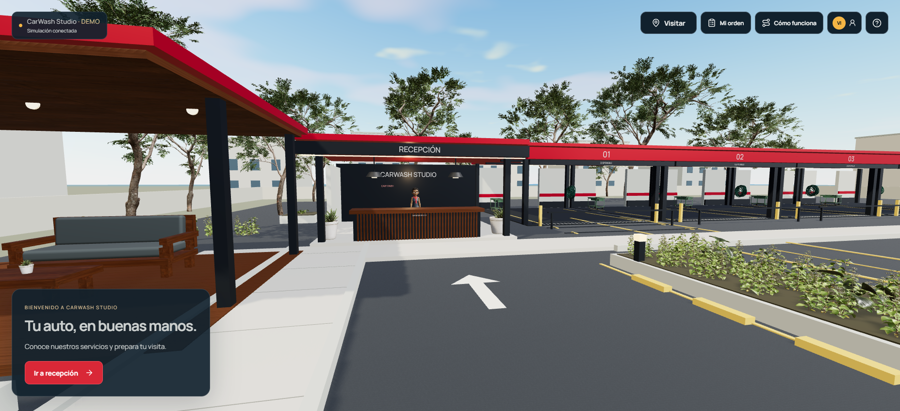
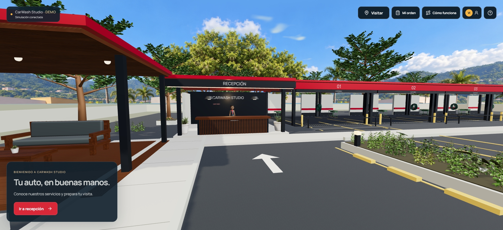
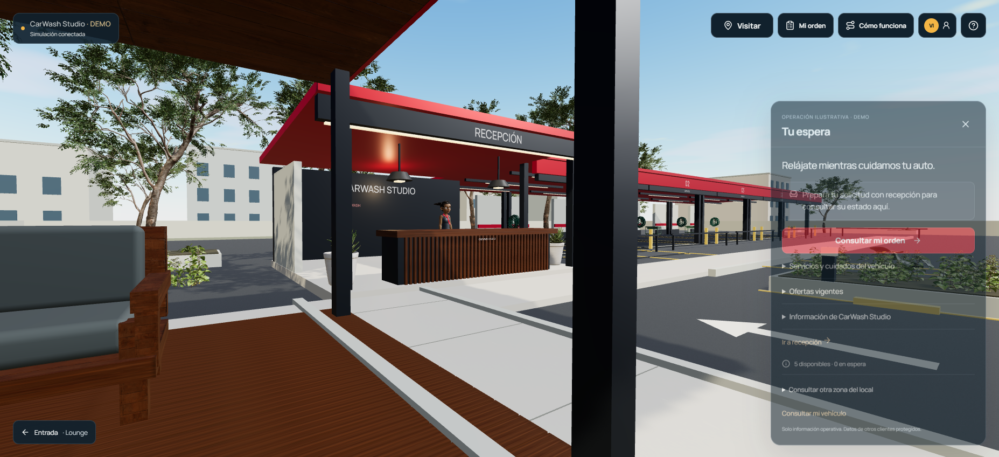
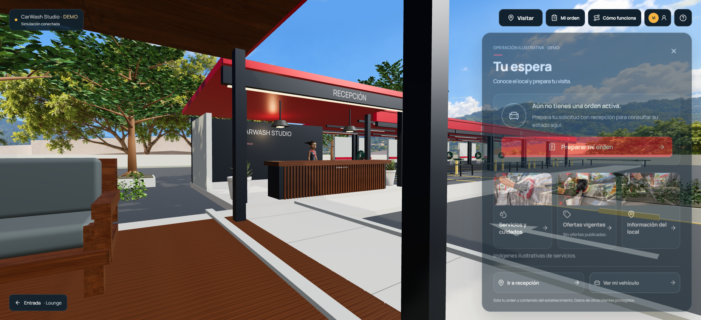

Las referencias son conceptos. Las imágenes «sistema» son capturas del navegador real, con viewport1855×848. Operación vacía por defecto: no se añadieron vehículos ficticios. El fondo suministrado se restauró; las montañas de esa imagen permanecen por petición posterior. La aprobación artística sigue pendiente.
Entrada · referencia y versión integrada

Referencia conceptual · 1855×848Sistema · captura realAsfalto, acera, lounge, recepción y cinco bahías operativas en una escena.
Lounge · referencia y versión integrada

Referencia conceptual

Sistema · captura realEncuadre interior revisado; mobiliario y panel comparten la operación existente.
Vegetación · antes / después con cámara conservada
Esta comparación precede al ajuste final del lounge. Entrada y exposición coinciden dentro de precisión numérica; el fondo y materiales cambian deliberadamente. La cámara configurada del lounge seguía siendo la misma. Animación de Ana y nubes no se congelaron.

Antes · fondo ausente y copas dispersas

Después · alfa reparado y árbol de hojas malladas

Antes · cámara anterior del lounge

Después · misma cámara previaLos paneles de estas dos capturas se tomaron antes de mejorar la espera de la animación CSS; no demuestran el acabado final del panel.
Diferencias que permanecen
El roble tiene corteza lisa y una interpretación arquitectónica; la referencia utiliza vegetación más natural y variada. No se declara equivalencia fotográfica.
El arbusto conserva flores blancas pequeñas. No reproduce exactamente un seto podado.
El fondo original es una foto rectangular adaptada mediante sectores reflejados. No aporta parallax real360°; no se presenta como tal.
La jardinera derecha comienza visualmente cerca del61% del ancho, frente al68% orientativo: se desplazó para respetar el giro del truck. En lounge, la columna queda alrededor del35% en vez del25–28%, y la mesa se extiende más abajo que en el concepto. Son diferencias de composición pendientes de revisión.
Las proporciones del establecimiento y el conjunto modular del lounge se aproximan al concepto; no son una reproducción exacta del mobiliario.
La navegación general y marca configurable se conservan. No se implementó una nueva barra global para imitarla en estas imágenes.
Móvil es emulación en Edge sobre GPU de PC. Falta aprobación artística y prueba en un teléfono físico.